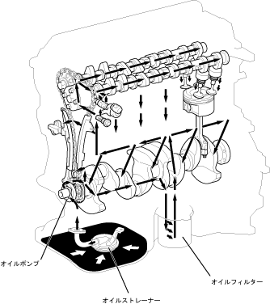

| ルブリケーション全般 |
| ● |
潤滑方式は，全圧送・全ろ過方式を採用しました。シリンダーブロックのオイル戻し通路をオイルパン分割面まで延長することにより，シリンダーヘッドから戻るオイルが直接クランクシャフトに当たらない構造とし，フリクションの低減をはかりました。
|
| ● |
エンジンオイルは，低粘度オイルを採用し，フリクションの低減をはかりました。
|
| ● |
オイルレベルゲージは，樹脂製を採用し，エンジンルーム前面に配置してサービス性に配慮しました。
|
|  |
 エンジンオイルの流れ エンジンオイルの流れ
|